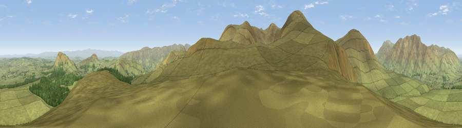

Viewpoint near Dockray
#5194 in England · top 32% of its area beats it · near DockrayThe view, rendered

A 360° render of this exact spot computed from the terrain model, tree cover and land cover — summer colours, afternoon light, calibrated against photographs of famous viewpoints. Real trees, hedges and buildings will differ in detail.
The panorama
Grey silhouette: terrain skyline in each direction (720 bearings, Earth curvature and refraction included). Dashed green: skyline with trees (+15 m) and buildings (+8 m) as obstacles. Blue strip: how far the ground is visible on each bearing.
Where the view opens
Wedge length = distance to the farthest visible ground on that bearing (vegetation-aware). Rings at 10, 25 and 50 km.
What fills the view
94% grassland · 5% woodland
Angular shares of the visible panorama (visual magnitude), not map area. Landscape diversity 0.10 (0–1 Shannon).
Key numbers
More beautiful places nearby
The staircase of upgrades: each row has a higher view potential than everything closer. Driving times are estimates from straight-line distance, calibrated against real road routing — check an actual route before setting out.
| Place | Direction | Drive | Score |
|---|---|---|---|
| High Brow | SSE · 1 km | ~3 min | 71.4 |
| Randerside | SW · 2 km | ~5 min | 75.1 |
| Common Fell | SE · 3 km | ~7 min | 76.7 |
| Great Dodd | SW · 3 km | ~7 min | 80.4 |
| Raise | SSW · 5 km | ~12 min | 81.5 |
| Blencathra | NW · 7 km | ~14 min | 81.7 |
| Lower Man | SSW · 7 km | ~15 min | 83.0 |
| Viewpoint near Legburthwaite | SSW · 7 km | ~15 min | 84.5 |
54.59155, -2.98533 · source: osm peak · position refined by local search. Computed location — check access rights before visiting.